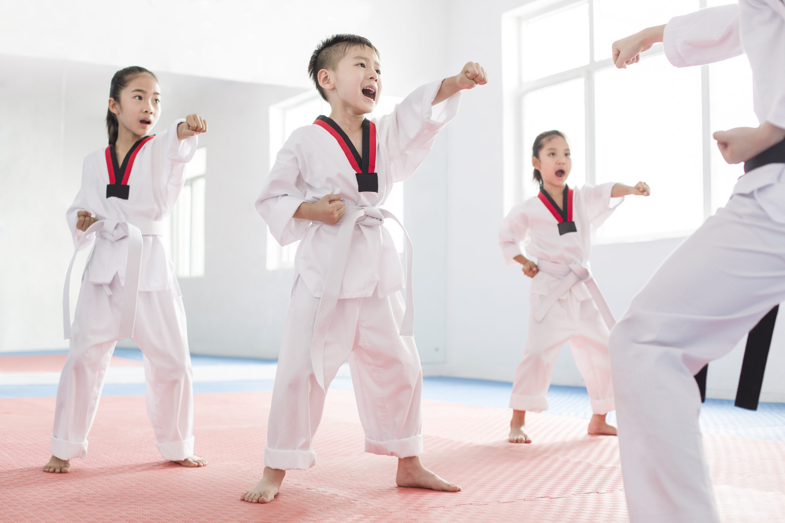
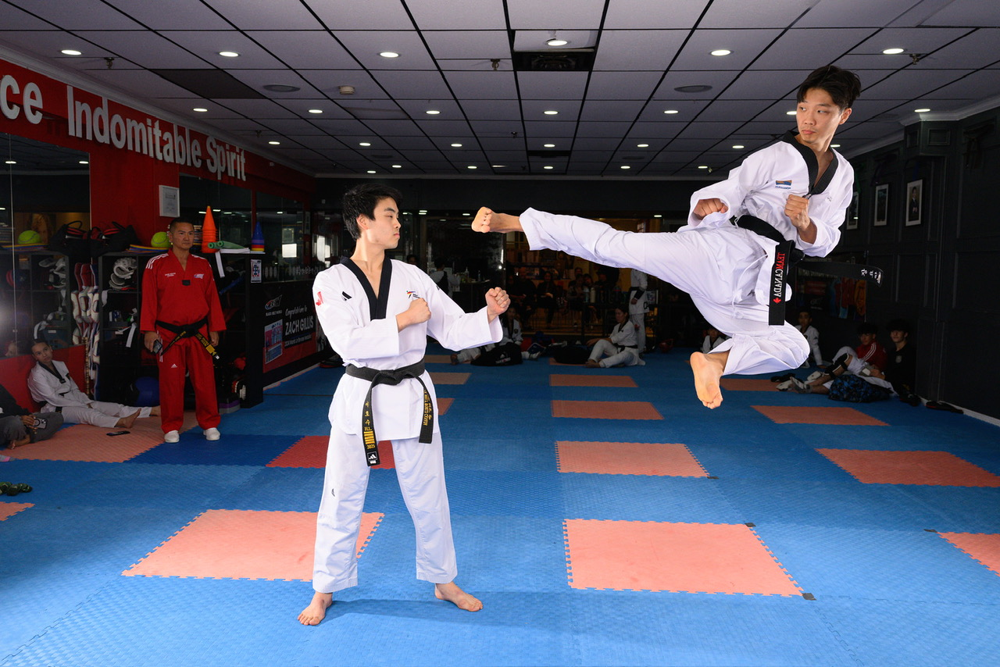
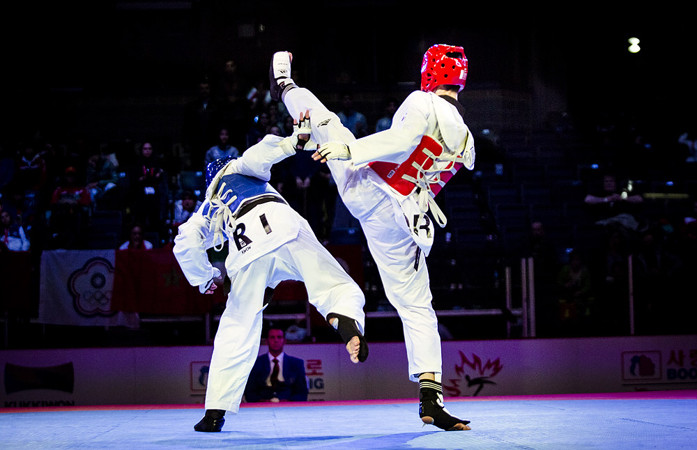
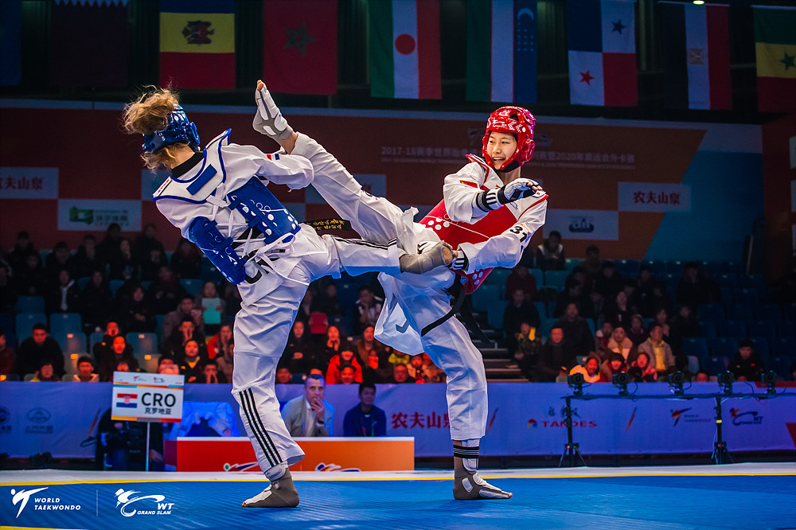
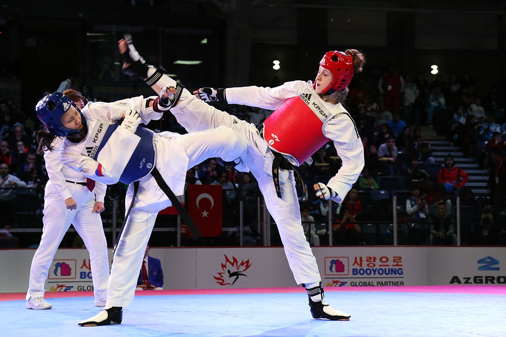

Anak — Fondasi & Karakter
Usia 5–12 tahun. Fokus pada motorik, keseimbangan, disiplin baris, dan teknik dasar yang aman. Tanpa kontak keras — semua sparring diganti target pad.
Pembinaan taekwondo yang terstruktur, aman, dan terukur — dari kelas anak usia 5 tahun hingga jalur atlet prestasi. Setiap kenaikan sabuk, setiap pertandingan, dan setiap laporan perkembangan dapat diikuti dengan jelas oleh orang tua.
Trial pertama gratis untuk semua kelas — tanpa kewajiban melanjutkan. Cukup bawa pakaian olahraga dan botol minum.

Peserta tidak dicampur tanpa tujuan. Kelas dibagi berdasarkan usia dan tujuan — fondasi untuk anak, teknik untuk remaja, dan periodisasi latihan untuk atlet yang bertanding.

Usia 5–12 tahun. Fokus pada motorik, keseimbangan, disiplin baris, dan teknik dasar yang aman. Tanpa kontak keras — semua sparring diganti target pad.

Usia 13–17 tahun. Pendalaman kihon, poomsae (jurus), dan fleksibilitas. Cocok untuk yang ingin rapi secara teknik dan siap ujian sabuk hitam.

Seleksi dari kelas remaja & dewasa. Latihan fisik, taktik bertanding, sparring dengan PSS, dan pendampingan ke kejuaraan daerah hingga nasional.
Kepercayaan dibangun dari transparansi. Karena itu setiap hal yang menyangkut anak Anda — kehadiran, target sabuk, hingga kesiapan bertanding — kami sampaikan secara tertulis, bukan sekadar lisan.

Klik setiap tingkat untuk melihat fokus latihannya. Ujian kenaikan tingkat (UKT) diadakan berkala dan dinilai dari teknik, poomsae, fisik, dan sikap.
Saring berdasarkan kelas untuk menyesuaikan dengan jadwal sekolah dan kegiatan keluarga. Datang 15 menit sebelum sesi dimulai.
Biaya pendaftaran awal mencakup dobok (seragam) dan sabuk putih. Biaya UKT dan kejuaraan diinformasikan tertulis sebelum peserta didaftarkan — tidak ada tagihan mendadak.
Untuk usia 5–12 tahun, fondasi & karakter.
Untuk usia 13–17 tahun, teknik & jurus.
Melalui seleksi, fokus kyorugi & kompetisi.
Pendaftaran awal: Rp 250.000 (dobok + sabuk putih + kartu anggota). Trial pertama gratis, tanpa kewajiban melanjutkan.
Untuk kelas anak, tidak ada kontak kepala dan tidak ada sparring bebas. Latihan menggunakan target pad, fokus pada teknik, keseimbangan, dan disiplin. Sparring dengan pelindung lengkap hanya untuk tingkat lanjut dan selalu diawasi pelatih.
Dengan latihan konsisten 2–3 kali seminggu, umumnya dibutuhkan sekitar 3–4 tahun dari sabuk putih hingga sabuk hitam (Dan 1). Kecepatan tergantung kehadiran, hasil UKT, dan kematangan teknik — bukan sekadar lama bergabung.
Jadwal sore dan akhir pekan dirancang agar tidak bentrok dengan jam sekolah. Menjelang ujian sekolah, peserta diperbolehkan mengurangi frekuensi dan mengganti sesi di minggu berikutnya dengan pemberitahuan.
Justru sebagian besar peserta mulai dari nol. Trial gratis memang disediakan agar anak mencoba dulu tanpa tekanan. Pelatih akan menilai kesiapan dan menempatkan anak di kelompok yang sesuai.
Cukup pakaian olahraga yang nyaman dan botol minum. Dobok baru diperlukan setelah resmi mendaftar. Datang 15 menit lebih awal untuk pengenalan dojang dan pelatih.
Isi formulir di bawah ini. Ringkasan pendaftaran akan tersusun otomatis — salin atau unduh, lalu tunjukkan saat datang pertama kali ke dojang.